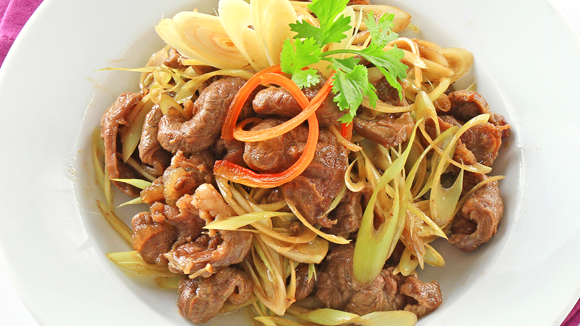

Bắp bò um sả

- Khẩu phần 2
- Chuẩn bị 10 phút
- Thực hiện 25 phút
Nguyên liệu
- 500g bắp bò hoa
- 150 sả
- 4 tép tỏi
- 1/2 chén nước dùng heo
- 2 thìa cà phê Hạt nêm từ Thịt Thăn, Xương
Ống và Tủy - Bổ sung Vitamin A
- 1 thìa súp Nước mắm chấm
- 2 thìa cà phê dầu hào
- 1 thìa cà phê tiêu
- 2 thìa súp dầu ăn
Hướng dẫn thực hiện
- Bắp bò rửa sạch, thái mỏng. Sả lột lớp vỏ ngoài, cắt gốc, rửa sạch, 1/2
băm nhỏ, 1/2 xắt lát mỏng. Ướp bắp bò với sả băm và 1/2 Hạt nêm từ
Thịt Thăn, Xương Ống và Tủy - Bổ sung Vitamin A, nước mắm chấm , để thấm 20
phút.
- Tỏi lột vỏ, băm nhỏ. Làm nóng 1 thìa súp dầu ăn, phi thơm 1/2 tỏi băm,
cho thịt bò đã ướp vào xào cho thịt săn lại, trút ra đĩa. Dùng lại chảo,
thêm dầu ăn vào, phi thơm 1/2 tỏi băm còn lại, cho sả xắt lát vào xào thơm,
trút thịt bò vào, nêm dầu hào, Hạt nêm từ Thịt Thăn, Xương Ống và Tủy
- Bổ sung Vitamin A, nước mắm chấm vừa ăn. Cho nước dùng vào nấu sôi,
nêm lại gia vị vừa ăn, nấu cho đến khi nước sệt lại là được.
- Cho bò um sả ra đĩa, dùng nóng.